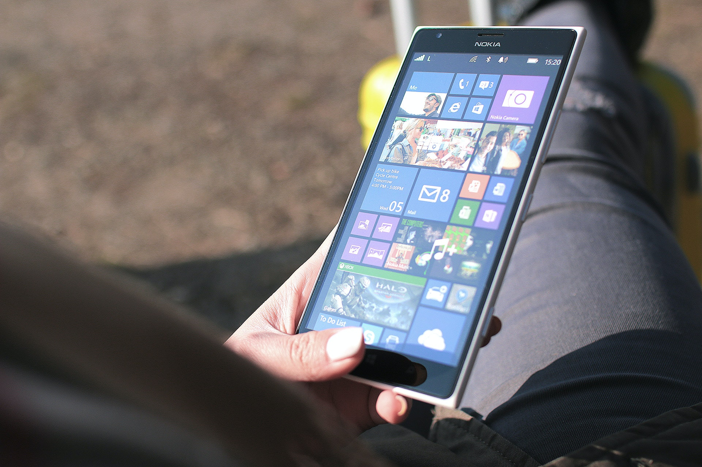
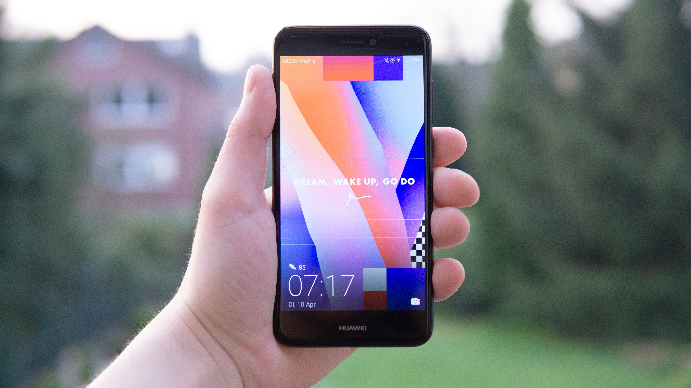

These are all different models of smartphone.As you can see in the pictures they
consist of touch screen parts that make their use easier.





These are all different models of smartphone.As you can see in the pictures they
consist of touch screen parts that make their use easier.
Smartphones are technological gadgets with a variety of features that let people communicate more effectively. But the fundamental question is whether they are merely instruments or something more for the general public.
A smartphone is a gadget that combines the features of a portable device, a mobile phone, and computer into one item. Smartphones, like computers, can access the Internet and run software programs. Touch screens are used on smartphones to allow users to interact with them. There are thousands of smartphone apps available, including games, personal-use, and business-use tools. The images show one of the most popular smartphones on the market today.
The answer is NO!But the version of a smartphones operating system can be updated. However, you cannot change a smartphones operating system. For example, you cannot install iOS on an Android phone and opposite.
Apps and data are stored in flash memory. The flash memory is normally non-removable and incorporated into the phone. Some smartphones contain a flash memory card slot, which is usually designed for an SD card, which allows users to utilise external storage.